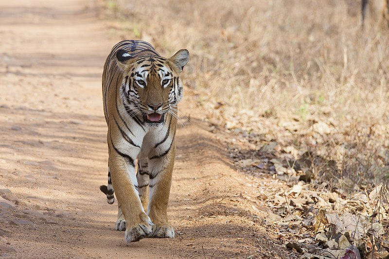

.png)
TADOBA FOREST
The Tadoba Andhari Tiger Reserve is a wildlife sanctuary in Chandrapur district of Maharashtra state in India. It is Maharashtra's oldest and largest national park. Created in 1955, the reserve includes the Tadoba National Park and the Andhari Wildlife Sanctuary. The reserve consists of 577.96 square kilometres (223.15 sq mi) of reserved forest and 32.51 square kilometres (12.55 sq mi) of protected fores."Tadoba" is taken from the name of the god "Tadoba" or "Taru", worshipped by the tribes who live in the dense forests of the Tadoba and Andhari region, while "Andhari" refers to the Andhari river that meanders through the forest.Winters stretch from November to February; during this season, daytime temperatures are in the 25°–30 °C range and the park is lush green. While summers are extremely hot in Tadoba, with the temperature rising to 47 °C, it is the ideal time to sight mammals near lakes as vegetation is minimal. The monsoon season begins in June; the area receives heavy rainfall during this season (approx.1275 mm) and humidity hovers around 66%
Location: Tadoba Andheri National Park, Chandrapur
Fees: 1000 rs/candidate
Visit With : Family.
Reaching Tadoba: By Bus, Train, Flight